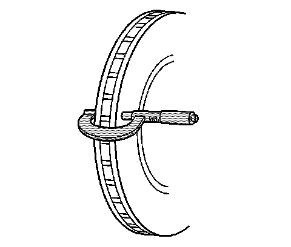

Brake Rotor Thickness Variation Measurement
Brake Rotor Thickness Variation Measurement
Caution: Refer to Brake Dust Caution (Brake Dust Caution) .
Important: Any disc brake rotor that exhibits thickness variation exceeding the maximum acceptable level must be refinished or replaced. Thickness variation exceeding the maximum acceptable level can cause brake pulsation.
1. If the inboard friction surface of the brake rotor is not accessible, reposition and support the caliper with the brake pads. Refer to Front Disc Brake Pads Replacement (Front Disc Brake Pads Replacement) and/or Rear Disc Brake Pads Replacement (JE5, JL9) (Rear Disc Brake Pads Replacement (JE5, JL9)) .
2. Clean the friction surfaces of the brake rotor with denatured alcohol, or an equivalent approved brake cleaner.

3. Using a micrometer calibrated in thousandths-of-a-millimeter, or ten-thousandths-of-an-inch, measure and record the thickness of the brake rotor at 4 or more points, evenly spaced around the rotor.
Ensure that the measurements are only taken within the friction surfaces and that the micrometer is positioned the same distance from the outer edge of the rotor, about 13 mm (1/2 in), for each measurement.
4. Calculate the difference between the highest and lowest thickness measurements recorded to obtain the amount of thickness variation.
5. Compare the thickness variation measurement to the following specification:
Brake rotor maximum allowable thickness variation: 0.02 mm (0.001 in)
Important: Whenever a brake rotor is refinished or replaced, the assembled lateral runout (LRO) of the rotor must be measured to ensure optimum performance of the disc brakes.
6. If the brake rotor thickness variation measurement exceeds the specification, the rotor requires refinishing or replacement.